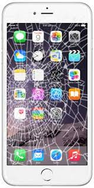

Problemas Comunes de Pantalla
Cada problema tiene una solución específica. Encuentra el tuyo a continuación.

Cristal Roto (Táctil OK)
La solución ideal y más económica si solo se dañó el vidrio exterior de tu equipo.

Pantalla con Manchas o Líneas
Indica un daño en el panel LCD/OLED interno. Requiere un cambio de pantalla completo.

Táctil no Funciona
Si tu pantalla no responde o se presiona sola, solucionamos los fallos del digitalizador.